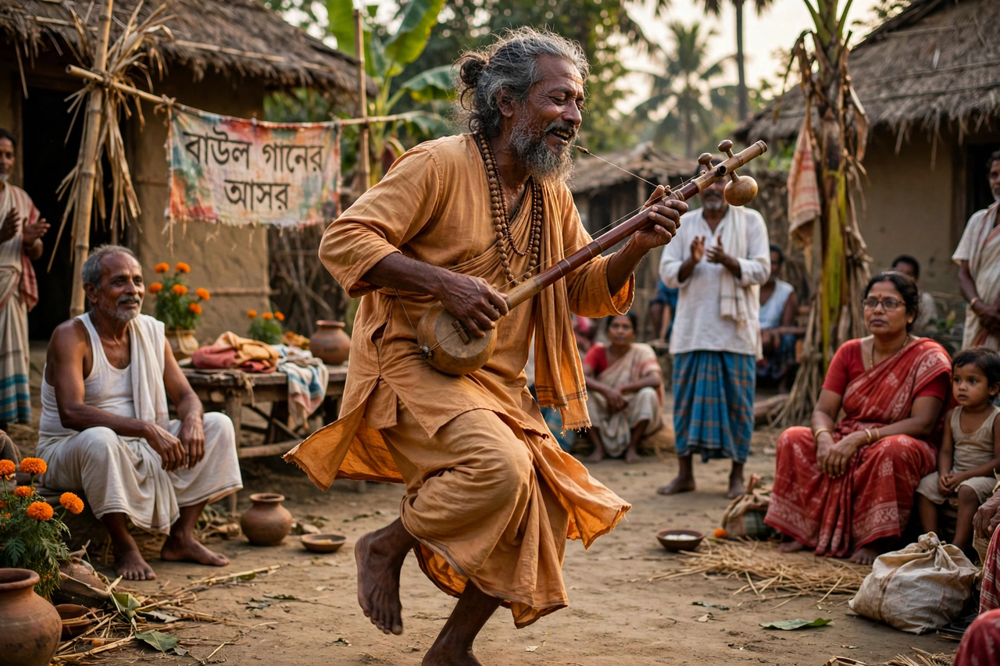

| Baul | |
| Region | Bengal (Bangladesh and West Bengal, India) |
|---|---|
| Type | Mystic minstrel tradition; syncretic devotional movement |
| Influences | Vaishnavism, Sufi Islam, Sahajiya Buddhism, Tantra |
| Instruments | Ektara, dotara, khamak, duggi, ghungur |
| UNESCO | Baul songs proclaimed a Masterpiece of the Oral and Intangible Heritage of Humanity in 2005 |

The Bauls (Bengali: বাউল) are a group of mystic minstrels and a religious sect from the Bengal region, comprising present-day Bangladesh and the Indian state of West Bengal. Mixing elements of Vaishnavism, Sufi Islam and indigenous Sahajiya traditions, Bauls are celebrated for their songs of divine love and inner realisation, sung to simple instruments in villages and towns alike. UNESCO proclaimed Baul songs a Masterpiece of the Oral and Intangible Heritage of Humanity in 2005 (inscribed on the Representative List in 2008).
Baul practice centres on dehatattva, the "truth of the body": the divine is sought not in temples, mosques or scripture but within one's own body and heart. The supreme aim is union with the moner manush, the "man of the heart", the innermost divine beloved. Bauls reject caste, organised religious ritual and sectarian labels, though they honour a guru who initiates the disciple into the path. Bauls may be Hindu or Muslim by birth, and the tradition deliberately dissolves that boundary.
Baul songs — collectively a major stream of Bengali folk music — are lyrical, philosophical poems set to memorable melodies. The singer typically accompanies himself on the ektara (a one-stringed plucked drone), the two- or four-stringed dotara, and the khamak, wearing ankle bells (ghungur) while dancing. Major festivals include the Lalon Festival at Kushtia in Bangladesh and the Kenduli Mela and Poush Mela in West Bengal.
The greatest Baul saint-poet was Lalon Fakir (c. 1774–1890), whose thousands of songs combine Hindu and Islamic imagery in a radical message of human unity; Rabindranath Tagore drew deeply on Lalon and Baul music, bringing it to world attention. In the modern era, performers such as Purna Das Baul carried the tradition to international concert stages and recorded with Western musicians.